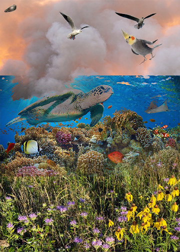

For my second collage I wanted to focus on air pollution and its effects on different ecosystems and the environment. I used a picture of smoke, underwater animals, grass, and some birds. I ended up having it divided into three parts with the grass on the bottom, water in the middle, and the smoke all up in the air. For this one I utilized some blending modes and then used the gradient feature for most of the masks on my layers. I found it cool that I was able to get the smoke to overlap with the underwater portion of my collage because I feel like that really shows the effects wildfire smokes have on our atmosphere and for water animals.
By using the gradient tool I was able to get the grass to blend into the water a little better. It’s not as seamless as I would like but I think if I played around with the overlay or added another mask it could've helped to create that. I tried using dissolve again for this collage but it didn’t really match what I was going for, and made it look a little choppy with the speckled effect it has. I also liked that with the gradient tool I could get the water and smoke to overlap and peek through from each other. I was able to get all of my images through google images.
